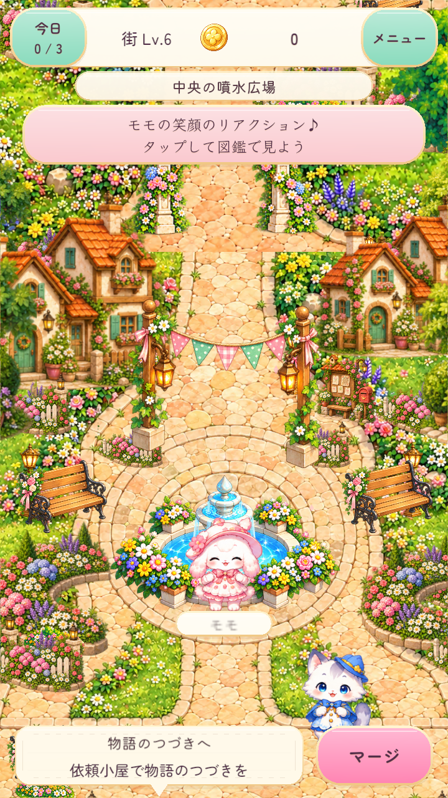
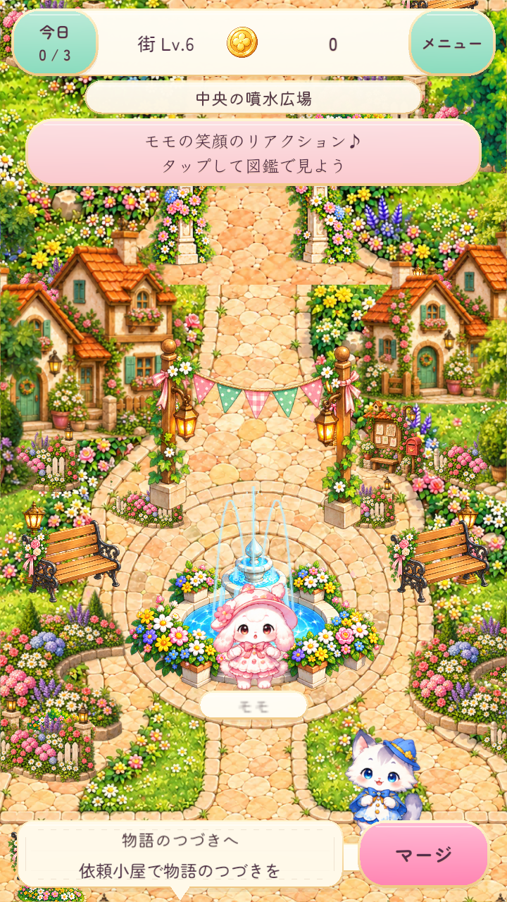
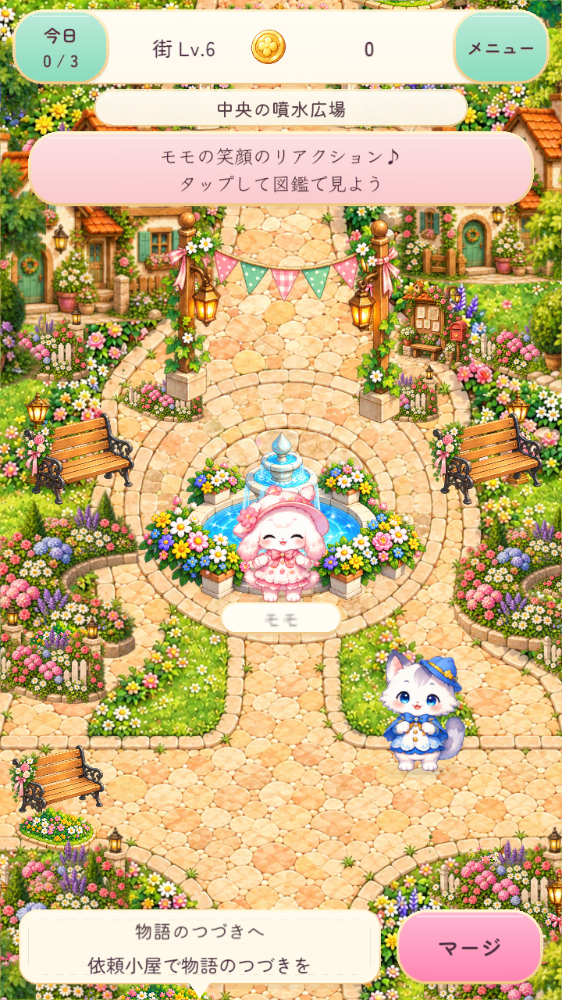
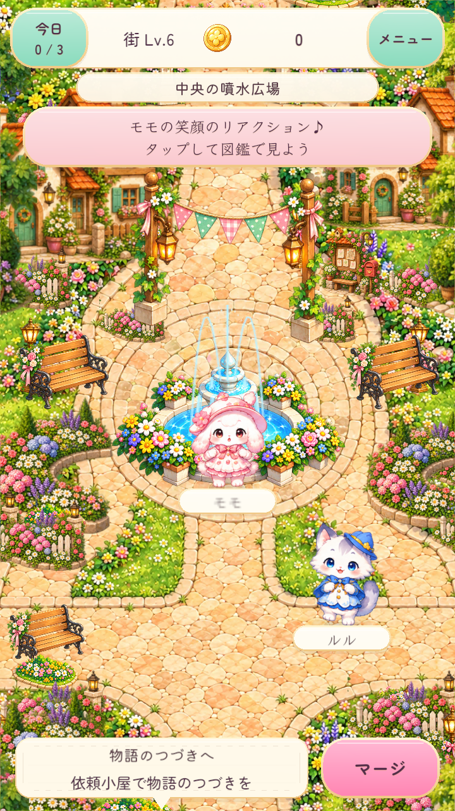
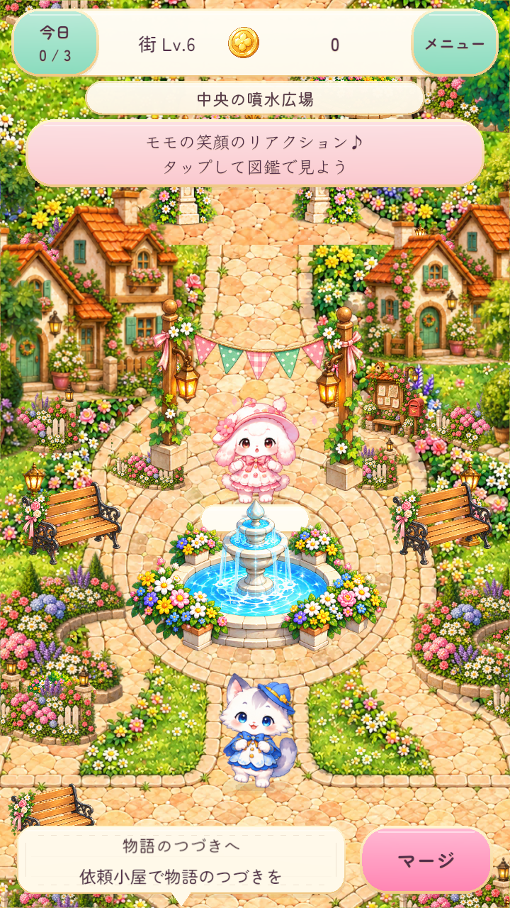

Before:8aa7a14 native run20261026-093151. Normal/Show:new native fixture. Old files are SHA-preserved; not repainted, not all from the new run. Show phases are reached by advancing the actual production presentation clock. Pixel load and acceptance pending.






